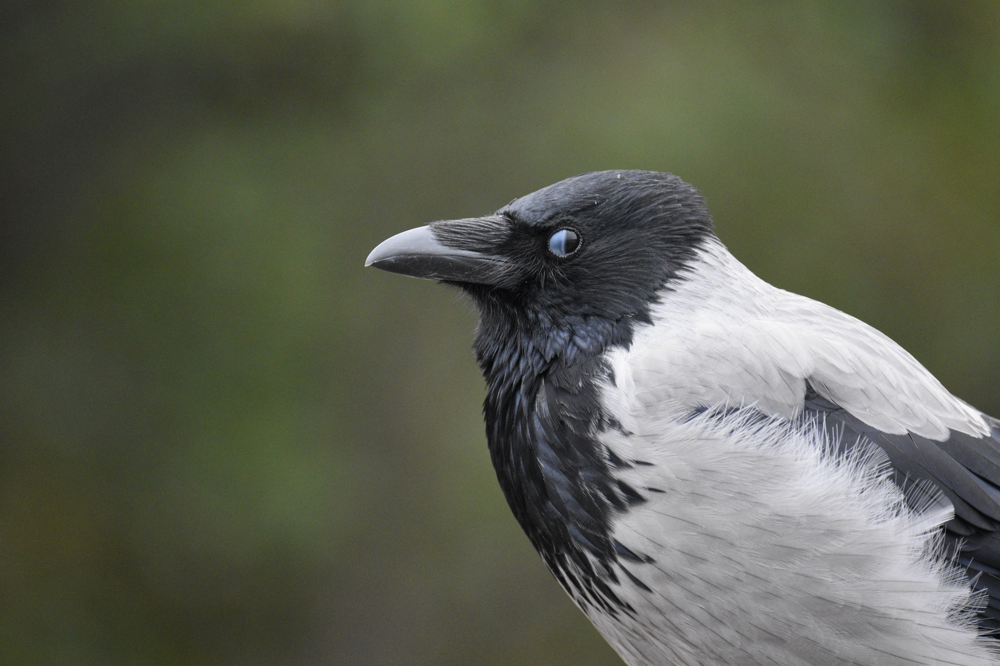
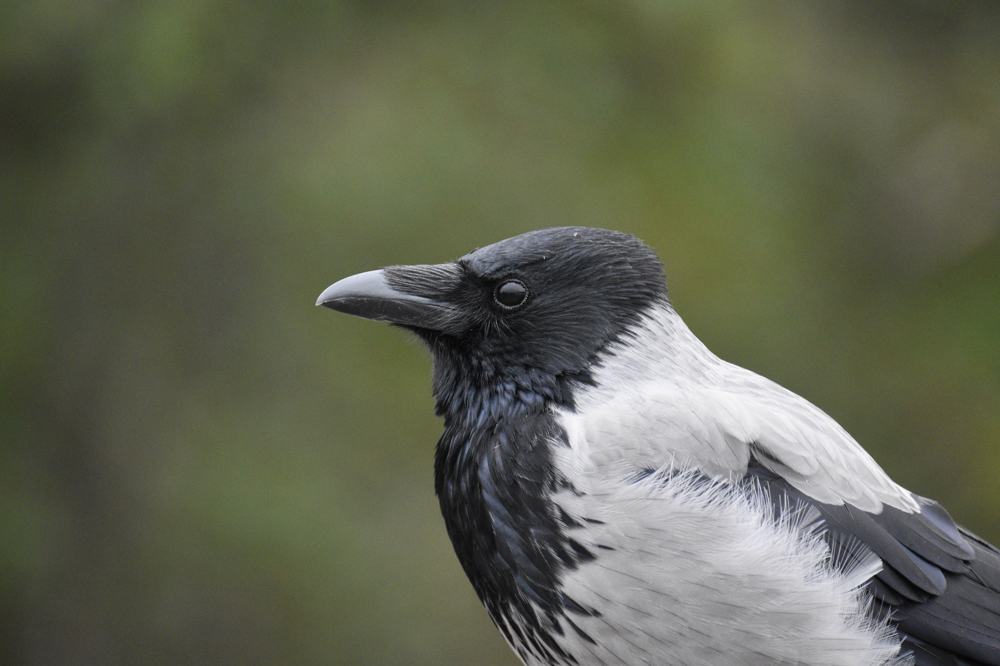
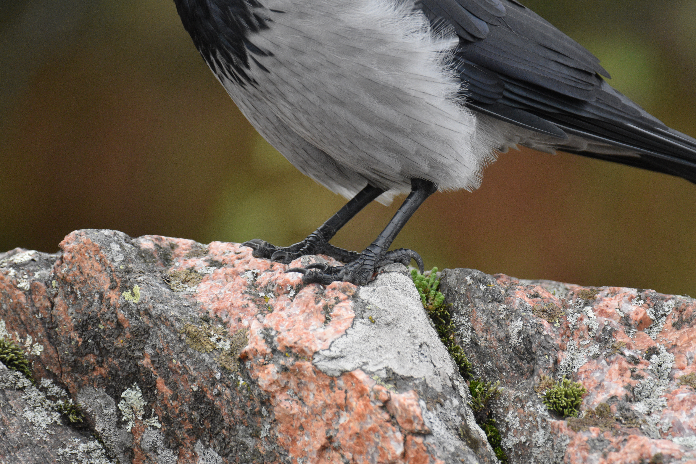

Olet nyt HTML-sivulla!
Seuraavaksi aion esitellä teille variksen, jonka tapasin Lauttasaaressa pari viikkoa sitten.

Sain näpättyä kuvan juuri, kun varis "räpäytti" silmiään. Variksen vilkkuluomi on kolmas luomi ylä- ja alaluomen lisäksi, jonka tarkoituksena on suojata ja kosteuttaa silmää.
Se liikkuu silmän eteen ja takaisin sivusuunnassa.
Näistä olen itse havainnut kaikki paitsi kuukkelin. Niitä näkee Lapissa, mutta en ole käynyt Lapissa lintuharrastukseni alettua.
Katsotaanpa vielä kuva samasta variksesta samasta hetkestä ennen vilkkuluomen liikettä:

Eikö olekin ihan mahdottoman ihana?
Tässä vielä variksen varpaat :)
